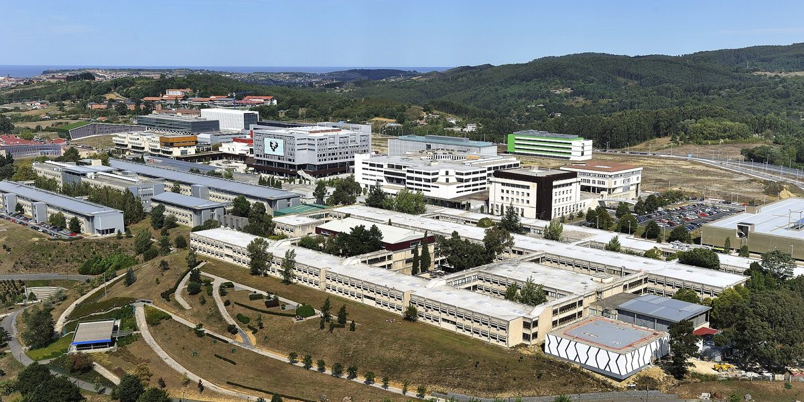

El grupo
Un grupo de investigación de la EHU que estudia el genoma humano y su microbioma, forma a profesionales y transfiere sus resultados al ámbito empresarial y a la sociedad mediante servicios, proyectos de I+D colaborativa y convocatorias competitivas.

Prof. Dr. Adrian Odriozola Martínez
Profesor Agregado de Genética en la Facultad de Ciencia y Tecnología de la EHU, acreditado como Profesor Pleno (Unibasq, 2025). Director del grupo Hologenomiks del Departamento de Genética, Antropología Física y Fisiología Animal.
Trayectoria
Doctor en Bioquímica por la EHU, con Premio Extraordinario de Doctorado y estancias predoctorales de investigación en centros internacionales. Inició su carrera investigadora en 2002 en genética forense y de poblaciones, donde diseñó estudios de asociación y sistemas de identificación genética. En la Universidad de Cantabria (2010-2012) se especializó en modelos predictivos basados en polimorfismos relacionados con el estilo de vida.
Desde entonces investiga la interacción entre la genética del hospedador y el microbioma intestinal. La aplica en nutrición, actividad física, ritmos circadianos, envejecimiento saludable y prevención del cáncer colorrectal. Desde 2021 es miembro del grupo de investigación consolidado de tipo A del Gobierno Vasco «Biología Molecular del Cáncer».
Investigación y transferencia
Ha sido investigador principal de proyectos de I+D con empresas y administraciones públicas. Es inventor de patentes españolas, europeas e internacionales en genética humana y nutrición de precisión. Recibió el Premio Euskadi a la Innovación en 2017 y el segundo Premio Manuel Laborde a la innovación tecnológica.
Desde 2013 tiene experiencia emprendedora en biotecnología aplicada a la salud y el deporte, y en gestión del conocimiento y de patentes en biociencias. Dirige el programa de emprendimiento EKIN48 de la Facultad de Ciencia y Tecnología, con ZITEK: 16 ediciones y más de 310 proyectos tutorizados.
Docencia
Imparte Genética en grados y másteres oficiales de la EHU desde el curso 2007-2008. Dirige la microcredencial universitaria de especialización en análisis genómico y de microbioma. Codirigió el título de posgrado de la EHU «Química y Genética en Salud, Nutrición y Deporte» (2015-2021).
Es profesor invitado en másteres de universidades de España (Universidad Miguel Hernández, Universitat de Barcelona y Universidad Europea) y de América Latina (Universidad CES, en Colombia, y Universidad del Valle de Guatemala).
Acreditaciones
Dos sexenios de investigación reconocidos. Colegiado n.º 2253 del Colegio Oficial de Biólogos de Euskadi, con las certificaciones de Biólogo Sanitario y Biólogo Ambiental del Consejo General de Colegios Oficiales de Biólogos.
- 7
- patentes, entre ellas una patente europea de nutrición de precisión
- 75
- artículos en revistas con revisión por pares
- 4
- empresas de base tecnológica cofundadas
- +850.000 €
- de financiación captada en proyectos de I+D+i y emprendimiento
Una red de trabajo
El grupo combina investigación básica y aplicada con la formación de nuevos investigadores y trabaja en red con instituciones y empresas. Esta estructura permite abordar proyectos completos, desde la obtención de las muestras hasta la validación y la transferencia de resultados, y formar consorcios para convocatorias de I+D+i autonómicas, estatales y europeas.
Con quién trabajamos
- Universidades y grupos de investigación
- Centros sanitarios, hospitales y biobancos
- Centros tecnológicos
- Empresas de base tecnológica
- Empresas del sector biosanitario, agroalimentario y de la nutrición
- Empresas de actividad física y rendimiento deportivo
- Másteres en España y Latinoamérica
-
Investigación y desarrolloGenoma, microbioma, epigenoma y bioexposoma. Laboratorio húmedo y seco, bioinformática.Codesarrollos y proyectosTecnología, patentes e investigación cofinanciada.
-
TransferenciaProtección industrial y patentes, con la OTRI de la EHU.LicenciaPatentes, software, know-how y datos.
-
FormaciónTesis doctorales, TFM, TFG, docencia y microcredenciales en genómica y microbioma.Codirección académicaTesis doctorales, TFM y TFG.
-
GestiónProyectos, convocatorias y difusión científica.Contratos de I+DCon el grupo, a través de la OTRI.
Madurez tecnológica de los desarrollos (TRL)
One Health a través del estilo de vida de precisión
Salud de precisión · Nutrición de precisión · Actividad física de precisión · Descanso y ritmos circadianos
Aplicación en biomedicina de precisión, salud y rendimiento deportivo.
Contacto y ubicación
- Correo
- adrian.odriozola@ehu.eus
- Teléfono
- +34 946 01 26 98
- Dirección
- Grupo Hologenomiks
Departamento de Genética, Antropología Física y Fisiología Animal
Facultad de Ciencia y Tecnología, EHU
Barrio Sarriena s/n
48940 Leioa (Bizkaia)
Enlaces de interés
